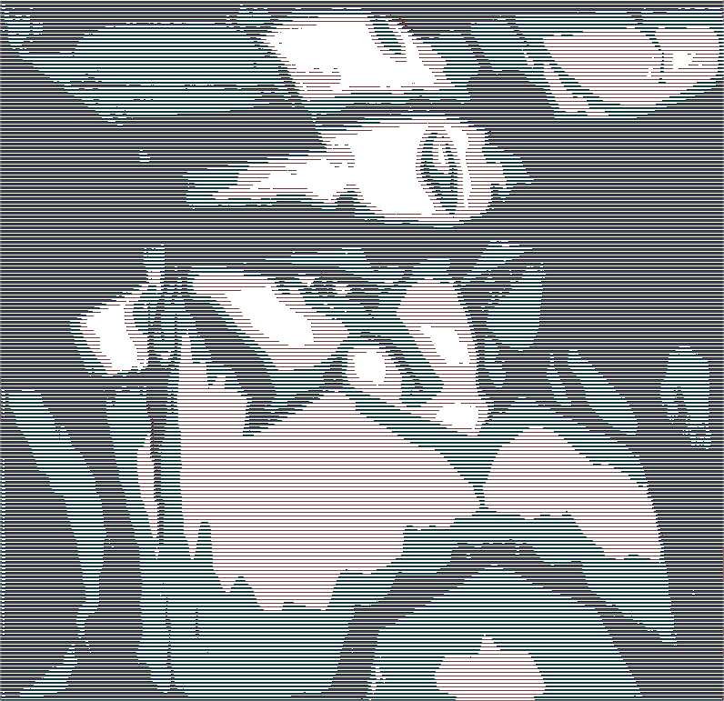
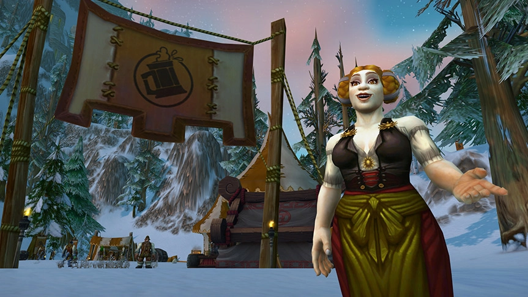
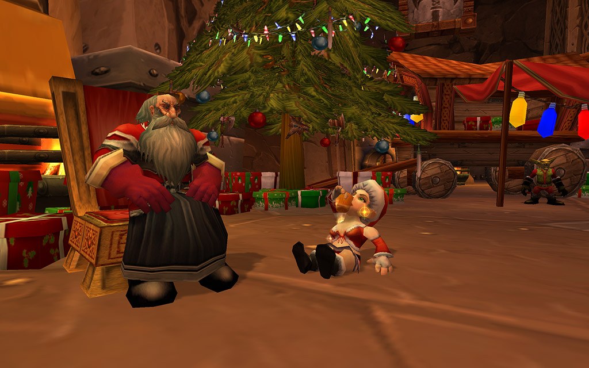
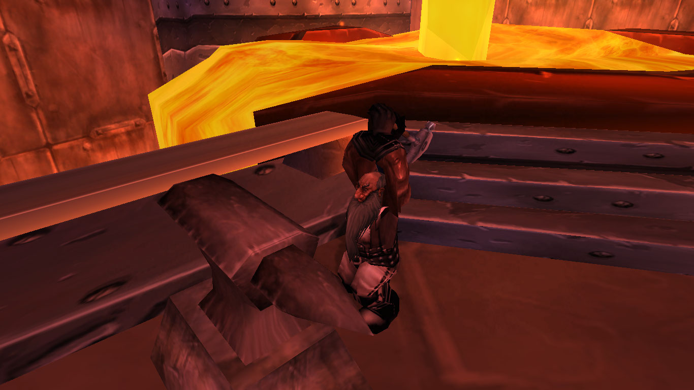
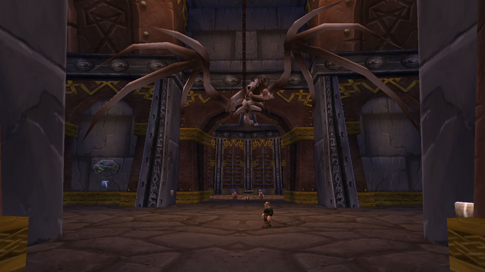
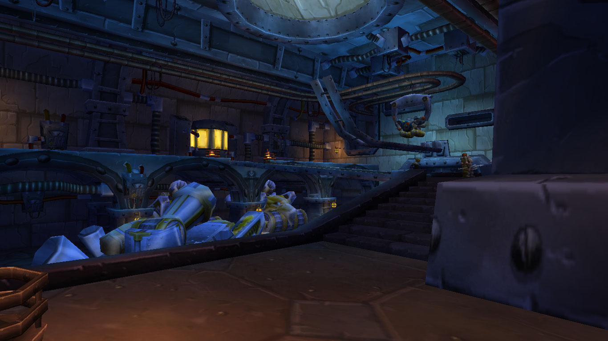
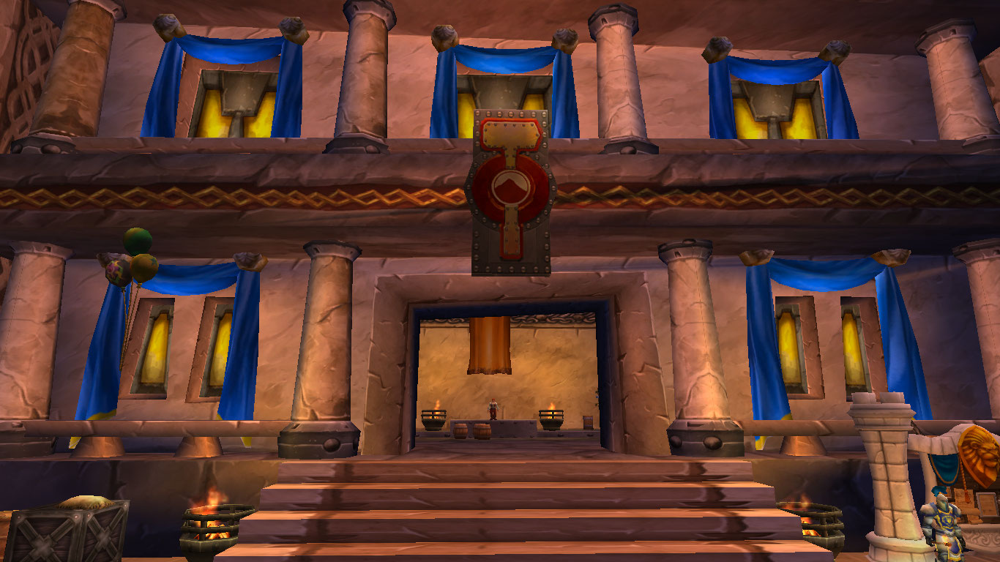
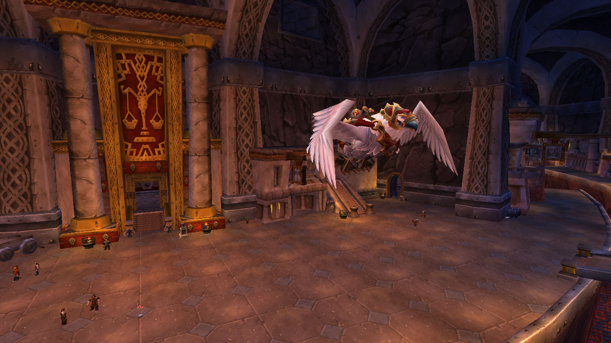

Actividades y Eventos

Entre las actividades realizadas en Forjaz encontramos eventos culturales o actividades comunes.
Eventos
La Fiesta de la cerverza
|  |
|---|
Entre los eventos más emblemáticos que ocurren en la ciudad se encuentra el de la Fiesta de la Cerveza. Se celebra cada año entre septiembre y octubre. Un evento donde se reunen las facciones de la alianza en una de las actividades que más le gustan a los enanos.
Dentro de las actividades a realizar se encuentran:
Atrapar a un Wolpentinger Salvaje.
Carrera de carnernos.
Preparación de cerveza.
Y mucho más. |
|
Festival del Invierno
|  |
|---|
Uno de los eventos más esperados en todo el reino, en diciembre llega el gran padre del invierno a Forjaz para dar regalos a todos aquellos que se hayan portado bien. Una fecha especial para compartir con amigos y disfrutar del festín de despedida del invierno.
Dentro de las actividades a realizar se encuentran:
Repartir regalos entre amigos.
Hacer comidas festivas.
Compartir las experiencias con el gran padre del invierno.
Y mucho más. |
|
Actividades
Herrería y forja
|  |
|---|
| Precisamente como se llama la capital, Forjaz es una gran forja, justo en el medio de la cueva se encuentra la gran forja, donde los más grandes herreros forjan los armamentos de mayor calidad. |
|
Arqueología
|  |
|---|
| La segunda profesión más popular y por la cual destacan los enanos es la arqueología, parece tener la colección más grande de artefactos arqueológicos entre las razas de Azeroth, principalmente, por la curiosidad del pasado de su raza como terráneos. |
|
Ingeniería
|  |
|---|
| Forjaz, además de ser el hogar de los enanos, también ha sido el segundo hogar de los gnomos, muy conocidos por su avanzada ingeniería y construcción de artefactos. Prueba de ello es la conexión de Forjaz con Ventormenta (la capital del reino de los humanos) a través de un tranvía subterráneo, recorrido que recorta muchísimos kilómetros de distancia entre los dos paises. |
|
Subastas
|  |
|---|
| Forjaz ha sido la casa de la subasta en los reinos de la Alianza, las subastas fueron gran parte de las actividades más importantes que sucedían en Forjaz hasta la creación de otra casa en Ventormenta (capital de los humanos). |
|
Vuelos de Grifos
|  |
|---|
| El clan martillo salvaje han sido grandes adiestradores de Grifos, montar estas nobles bestias ha sido una costumbre que se ha desarrollado incluso en el resto de razas que pertenecen a la alianza. |
|
Volver arriba